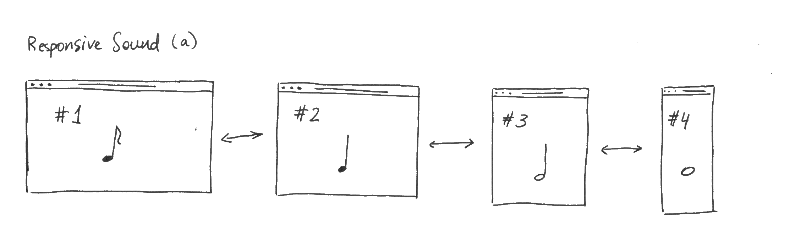
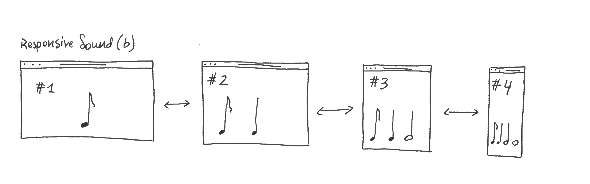

1. Responsive Sound

Responsive Sound (a) is an interactive responsive webpage,
that plays different sounds as the size of the browser window is modified.
The overall sound could either resemble a scale played by a classical instrument,
such as piano or guitar, or it could include sounds that are more abstract.
Essentially, it is a responsive browser version of a "drum machine".

Responsive Sound (b) is an interactive responsive webpage,
that creates music as the size of the browser window is modified.
The starting position of the window would only produce one sound,
but as the window gets smaller, sounds start to layer and create
a musical piece.